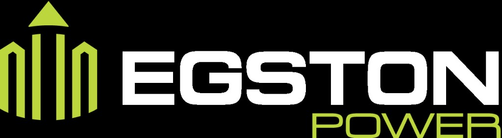

Nachfolgend der Ablaufplan der Konferenz mit den Themenschwerpunkten und Referentinnen und Referenten. Moderation: Stephan Hoffmann (vormittags) und Heike Winkler (nachmittags).
Sponsoren der 8. Konferenz

Programm als PDF
PDF in neuem Fenster öffnen